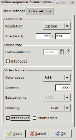

Running on the KV260 Board¶
This tutorial assumes the user has followed the Getting started with Kria SOM starter Kit. This guide explains the setup required for running designs on the started Kit.
Log in as root user
xilinx-kv260-starterkit-20222:~$ sudo su -l root
<password>
In the petalinux firmware step, we have used the fpgamanager class to store the binaries at /lib/firmware/xilinx/tutorial dir. Perform the following steps to view the files.
root@xilinx-kv260-starterkit-20222:~# ls /lib/firmware/xilinx/tutorial/
shell.json tutorial.bit.bin tutorial.dtbo tutorial.xclbin
Navigate to /opt/xilinx/kv260-smartcam/share/vvas/facedetect/preprocess.json
cd /opt/xilinx/kv260-smartcam/share/vvas/facedetect/
vi preprocess.json
Open the preprocess.json file and change the xclbin file name and location.
"xclbin-location":"/lib/firmware/xilinx/tutorial/tutorial.xclbin",
Launching the application¶
Prior to executing the newly installed application available at /opt/xilinx/bin, the FPGA firmware (PL bitstream + device tree overlay + PL drivers) needs to be loaded using xmutil utility commands. Follow the below steps to load Image resizing accelerated application firmware on the Vision AI Starter Kit.
Run the below command to list the existing application firmware available on the Vision AI Starter Kit. Verify the tutorial app in the listapps
xmutil listapps
Accelerator Accel_type Base Base_type #slots(PL+AIE) Active_slot
k26-starter-kits XRT_FLAT k26-starter-kits XRT_FLAT (0+0) -1
tutorial XRT_FLAT tutorial XRT_FLAT (0+0) -1
Run the below command to unload the default “kv260-dp” application firmware.
xmutil unloadapp
Run the below command to load Image resizing accelerated application firmware. Ignore the warning commands
xmutil loadapp tutorial
************************
***LOG FILE*************
************************
Nov 19 09:23:09 xilinx-kv260-starterkit-20221 kernel: OF: overlay: WARNING: memory leak will occur if overlay removed, property: /__symbols__/al5d
Nov 19 09:23:09 xilinx-kv260-starterkit-20221 kernel: OF: overlay: WARNING: memory leak will occur if overlay removed, property: /__symbols__/zocl
Nov 19 09:23:09 xilinx-kv260-starterkit-20221 kernel: debugfs: Directory '4-003c' with parent 'regmap' already present!
Nov 19 09:23:09 xilinx-kv260-starterkit-20221 kernel: zocl-drm axi:zyxclmm_drm: IRQ index 8 not found
tutorial: loaded to slot 0
root@xilinx-kv260-starterkit-20221:~# Nov 19 09:23:12 xilinx-kv260-starterkit-20221 kernel: xilinx-video axi:isp_vcap_csi: Entity type for entity 80000000.csiss was not initialized!
Run the Image Resizing Application¶
Place the AR1335 camera module pointing to the users face and run the Image Resizing Application accelerated app. The command will run for 3-4 mins and will automatically terminate. Since monitors does not support lower resolutions, the output is captured in a file. The command will perform the following operations:
MIPI camera reads an input video of NV12 format, of size 1920x1080 pixels, which is specified using the following command. The description of the v4l2src0 plugin is described in the vvas plugin step.
media-device=/dev/media0 v4l2src0::io-mode=dmabuf v4l2src0::stride-align=256 v4l2src0::num-buffers=1000 ! video/x-raw, width=1920, height=1080, format=NV12, framerate=30/1The pre-processing acceleration kernel converts it to a BGR format and performs a resizing algorithm of 224*224 size, which is specified using the following coomand
vvas_xmultisrc kconfig="/opt/xilinx/kv260-smartcam/share/vvas/facedetect/preprocess.json" ! video/x-raw, width=224, height=224, format=BGRTHe output is written to the disk using the filesink command
filesink location=capture1.bgr. The capture.bgr will be viewed using the Pyuv player in the next step.
gst-launch-1.0 mediasrcbin media-device=/dev/media0 v4l2src0::io-mode=dmabuf v4l2src0::stride-align=256 v4l2src0::num-buffers=1000 ! video/x-raw, width=1920, height=1080, format=NV12, framerate=30/1 ! queue ! vvas_xmultisrc kconfig="/opt/xilinx/kv260-smartcam/share/vvas/facedetect/preprocess.json" ! video/x-raw, width=224, height=224, format=BGR ! queue ! filesink location=capture1.bgr
************************
***LOG FILE*************
************************
Setting pipeline to PAUSED ...
Resize: mean_r=128.000000
Resize: mean_g=128.000000
Resize: mean_b=128.000000
Resize: scale_r=1.000000
Resize: scale_g=1.000000
Resize: scale_b=1.000000
Pipeline is live and does not need PREROLL ...
Pipeline is PREROLLED ...
Setting pipeline to PLAYING ...
New clock: GstSystemClock
Got EOS from element "pipeline0".
Execution ended after 0:00:38.397433844
Setting pipeline to NULL ...
Freeing pipeline ...
Viewing in Pyuv Player¶
In this step, we will view the captured image in the Pyuv player.
Copy the file to the user- Linux space where pyuv player is installed.
Copy to petalinux home directory
root@xilinx-kv260-starterkit-20222:~# cp capture1.bgr /home/petalinux/
From a different terminal, use the following command to copy to the user Linux machine where the Pyuv player is installed
scp -O petalinux@10.0.0.63:/home/petalinux/*.bgr .
petalinux@10.0.0.63's password: <>
Launch the pyuv player, select the “All files” option, and open the capture1.bgr file. Configure the Pyuv player with the following settings and View the video.

Next steps¶
This completes the Image resizing Application. The next step is adding the ML pipeline to the Image resizing pipeline. Follow the ML Inference tutorial